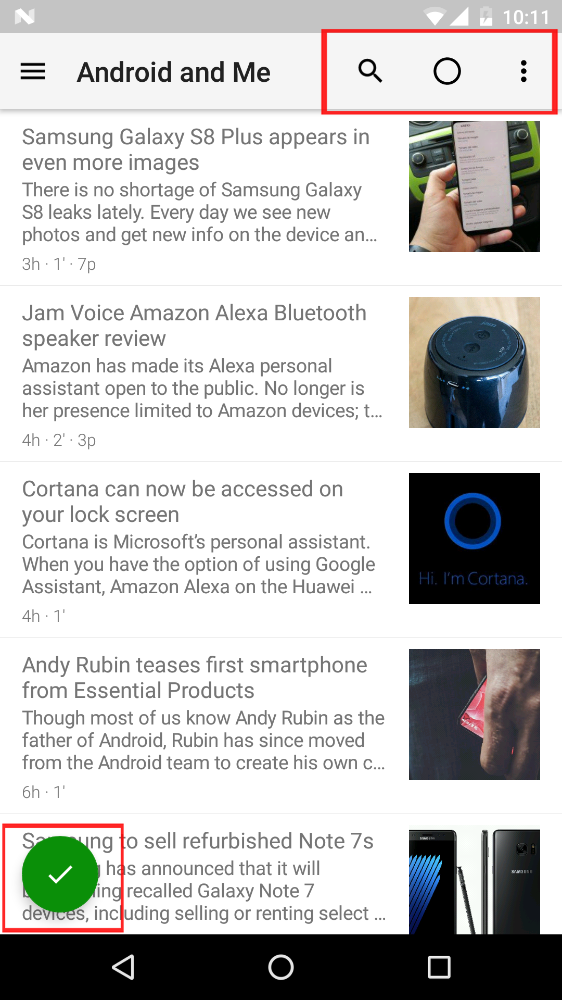
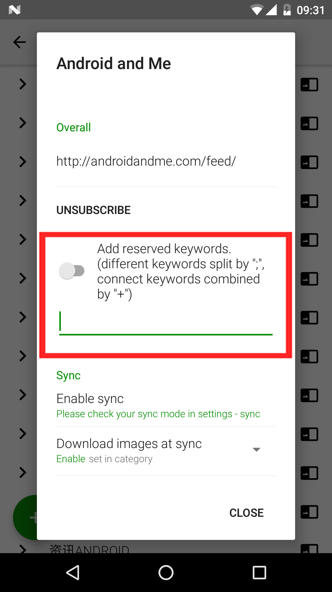
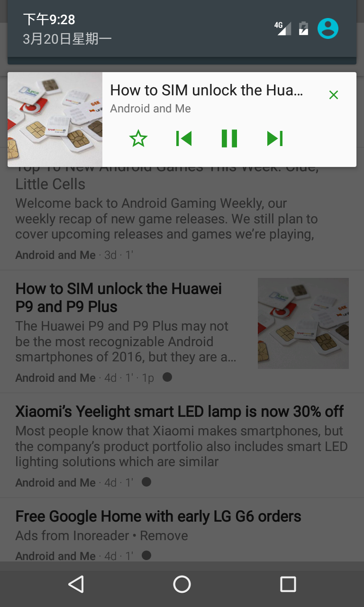

把 FeedMe 翻了个底朝天，发现这 5 个隐藏功能藏得真深
FeedMe 不止是个 RSS 阅读器——高级同步对话框、三级过滤器、TTS 双重 Keep、下拉精确同步、自建 RSS 对接，每个都有你可能没摸到的门道。
你以为FeedMe官网就是个刷刷 RSS、听听播客的 Android 小工具？从下载安装到折腾完所有设置，我花了一周把它从顶翻到底、把每个订阅源的二级选项都戳了一遍，结果发现它藏着一堆官方不宣传、但日常用起来能省大麻烦的功能。这些功能要么埋在三级菜单里，要么需要组合设置才显出威力——说它们是「隐藏功能」一点都不冤。
1. 高级同步对话框：按需决定这次下不下图片
大多数人用 FeedMe 同步就是点一下侧栏的同步按钮，然后乖乖等。但你有没有注意过「设置 → 同步」里面有个开关叫「显示同步方式」？打开它之后，下次点同步按钮就不会直接跑完整流程了——会弹出一个对话框，让你单独勾选这次同步要不要下载图片、要不要下载 web 页面、要不要下载播客音频。

这个功能的价值在什么地方？通勤路上你用流量开了 App，想快速看一眼有没有新文章，这时候完整同步会偷偷下载一堆图片——一个月下来几十 MB 流量没了。但如果你平时在家里 WiFi 下开完整同步，那图片和播客都得下好离线读。高级对话框让你每次手动同步都能灵活选择：这次只拉元数据看看标题，还是连同图片一起拖下来，全凭当下网络情况说了算。
开关位置很隐蔽：设置 → 同步 → 最底下的「显示同步方式」，名字本身就很模糊，不翻到最后一行根本看不到。而且它只对手动点按钮同步有效——定时自动同步和打开 App 时的快速同步都不受它控制。
2. 过滤器三级优先级：在订阅源级别精准挡垃圾
FeedMe 有个很多人听说过的关键字过滤器——同步时自动把含某些关键词的文章标记已读。但很少有人知道它有三级配置体系，优先级从高到低分别是：订阅源级别 → 类别级别 → 全局级别。

举个例子你就懂了。假设你订阅了一个综合科技博客，它偶尔会发招聘广告。你在全局过滤里写了关键字「招聘」，但这个博客你其实只想过滤掉「招聘」、保留所有其他内容——那就去侧栏「订阅管理」，点开这个具体订阅源，在它的订阅设置里找「过滤器」部分，开启过滤模式，输入关键字。订阅源级别的过滤器会覆盖全局设置，所以你不会误杀其他源里可能出现的「招聘」相关技术讨论。
关键字语法也藏着门道：+ 表示 AND（同时包含），; 表示 OR（二选一）。比如你想过滤掉同时含「招聘+内推」的文章，同时也过滤掉含「推广」的，就写 招聘+内推;推广。这个语法在FeedMe文档里提了，但 UI 上没有任何提示，完全靠自己试或者翻手册。
还有个坑要注意：过滤器只在同步时生效，已经存在的文章不会被重新过滤。要是你后来改了规则想套到旧文章上，得清除该源的本地缓存再完整同步一次——这步没人会主动告诉你。
3. TTS 锁屏 Keep：双重电池优化才管用
这是我踩过最久的坑。FeedMe 后台播放 TTS 朗读或播客，锁屏后突然停了——前台服务明明在跑、通知栏也显示着播放控制，但声音就是断了。折腾了好几天才发现，不是 FeedMe 的问题，是 TTS 引擎本身也被 Doze 机制杀掉了。
FeedMe 播放 TTS 的流程是它自己启动前台服务 → 调用 Android 系统 TTS API → TTS 引擎实际朗读。很多人只把 FeedMe 设为「电池优化不限制」，但忘了 TTS 引擎也是独立进程，同样需要设置。Google TTS、科大讯飞、语记——不管你用的是什么引擎，都要在系统电池优化里单独找到它、同样设为不限制。
不同厂商 ROM 还有额外门槛。小米要开自启动、省电策略设无限制；华为要手动管理启动权限；OPPO 要关掉后台冻结。FeedMe 官方甚至专门推荐了 dontkillmyapp.com 这个网站，上面有每个设备型号对应的后台限制设置方法——这个链接在文档深处，几乎没人会主动去找。

4. 下拉精确同步：只刷当前列表的源
FeedMe 的四种同步触发方式里，最被低估的是第四种：快速手动同步（下拉刷新）。它有个独有的特性——只同步当前列表显示的内容。
如果你的侧栏选的是「所有条目」，下拉就是全部订阅源；如果你点进了某个具体类别（比如「科技」），下拉就只刷这个类别下的源；更绝的是，如果你选中了某一个订阅源，下拉刷新就只同步这一个源——其他源的同步被跳过了。
这个功能对追热点特别好用。假设你订阅了十几个科技媒体，但只想第一时间看到某个特定源的更新——选中那个源，下拉就行，3 秒搞定。不用等完整同步跑完所有源。
前提是「设置 → 操纵 → 下拉刷新」得先启用，默认是关的。而且它只做快速同步——不下载图片、不下载播客、只拉元数据。想离线读的话，还得之后手动跑一次完整同步。
5. 自建 RSS 对接：不止 FreshRSS，主流服务全覆盖
FeedMe 对自建 RSS 服务的支持做得异常完整——FreshRSS、Tiny Tiny RSS、CommaFeed、Miniflux、Floola、Google Reader API 兼容服务、Fever API 兼容服务——基本上市面上能叫得出名字的自建 RSS 服务，FeedMe 都能接。
关键是每个服务的 API 端点路径都不一样，FeedMe 里要填的地址不能错一个字符。FreshRSS 需要精确到 /api/greader.php，Fever 类服务是 https://your-domain/fever/?fever 格式，TT-RSS 直接填部署地址就行。这些细节如果不看文档绝对猜不到——我第一次接 FreshRSS 时只填了部署域名，同步了半天没反应，翻了半小时才发现少了 /api/greader.php 这一段路径。
Fever API 类服务还有个限制：不能在 FeedMe 里直接添加订阅源，只能在自建服务的 Web 界面添加，FeedMe 再同步过来。这个限制在设置里没有任何提示，加源失败了才会意识到。
FeedMe 把这些功能藏得这么深，估计是怕新用户被复杂设置劝退。但对 RSS 重度用户来说，把这些隐藏功能摸透，FeedMe 就从一个普通阅读器变成了完全为你服务的个性化信息管道。过滤器帮你挡垃圾、高级同步帮你省流量、下拉精确同步帮你追热点、自建服务对接帮你彻底拿回数据主权。
这些功能在 FeedMe 的中文文档里都有详细说明，只是不会在设置界面弹个气泡告诉你「嘿，看这里，还有这个」。这套资料也同步到了 GitHub、Gitee 和 GitCode 三个仓库，挑个国内访问快的就行。把设置菜单从顶翻到底这件事本身，也是一种乐趣——你永远不知道下一行藏着什么。